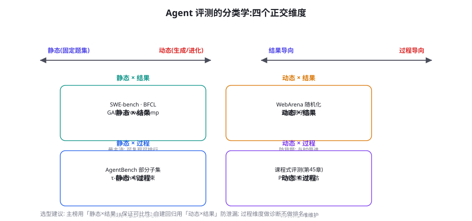
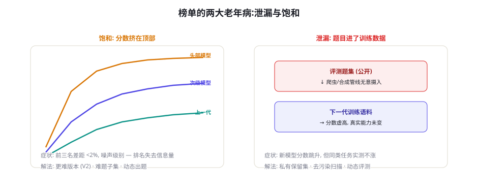

Agent 评测方法论：静态到动态、过程到结果
从本章开始的评测篇回答一个贯穿全书的问题：「怎么知道你的 Agent 变好了？」训练篇的每一章都在引用评测（验证器、基线、三基线门禁），现在轮到把「评测」本身讲透。本章是评测篇的地图章：Agent 评测与普通 LLM 评测的本质区别、四个正交维度的分类学、核心指标体系（任务成功率与步数效率）、以及所有榜单共同的两大老年病——泄漏与饱和。读完本章，后面六章的具体基准（SWE-bench、WebArena、GAIA、BFCL……）你就能按图索骥。
Agent 评测与 LLM 评测的本质区别
「问一道题、对一篇答案」的 LLM 评测与「跑一场任务」的 Agent 评测，隔着四道鸿沟，每道鸿沟都是一个工程难题的来源：① 评测对象从「回答」变成「轨迹」——要评的不再是一段文本，而是模型与环境的几十次交互，每一次交互都可能引入噪声（工具超时、页面加载差异）。② 环境成为评测的一部分——环境的随机性、稳定性、可复现性直接进入评测信噪比：同一模型同一任务两次跑结果不同是常态，评测系统必须回答「差异是模型还是环境」。③ 判定从「比对」变成「验证」——文本答案可以字符串比对，任务完成要查环境终态、跑单元测试或请裁判（第 57 章）——判分器本身成了评测系统里最复杂也最脆弱的组件。④ 成本从「一次推理」变成「一场对局」——单题评测的 token 消耗是问答的 10~100 倍，跑一轮完整基准的成本与训练一轮 LoRA 同量级——评测预算是稀缺资源，「测什么、测多少次」成为设计决策。四道鸿沟合起来解释了 Agent 评测的现状：比 LLM 评测年轻、混乱、贵，但离真实价值更近——榜单分数与实际业务表现的相关性，是 Agent 评测里最值钱的争议话题（本章末尾）。
分类学：四个正交维度

维度一：静态 vs 动态。静态评测用固定题集（题目冻结、答案冻结），优点是可复现、可排行、可比历史；缺点是「固定」就有泄漏风险（第 47 章去污染的反面）且会被针对性优化（过拟合到题集）。动态评测让题目随时间生成或变异（WebArena 的任务参数随机化、第 45 章的课程式生成），防背题但牺牲可比性——「昨天的 60 分和今天的 60 分不是同一个 60 分」。生产团队的标配是「静态主榜 + 动态影子」：公开基准测相对位置，自建动态集测真实防老化。维度二：结果 vs 过程。结果导向只看任务成败（可排行、难诊断），过程导向看轨迹质量（步数、工具选择、错误恢复——诊断力强但判分主观）。两者的关系与第 46 章 ORM/PRM 完全同构：结果分做「排名」，过程分做「诊断」——评测与训练共享同一套底层框架，这正是本书把两者放相邻章节的原因。
| 维度 | 静态端 | 动态端 | 评测设计建议 |
|---|---|---|---|
| 题目来源 | 冻结题集（公开基准） | 生成/变异（影子集） | 主榜静态 + 影子动态，分数分开报 |
| 判定焦点 | 结果（成功率） | 过程（轨迹质量） | 结果做排名，过程做失败归因 |
| 环境形态 | 容器沙箱（可复现） | 仿真/真实混合 | 环境版本戳必须随分数落库 |
| 判分机制 | 规则/断言（客观） | 裁判/模型（语义） | 判分器版本与提示词入版本管理 |
核心指标：成功率与它的三个补充
Agent 评测的第一指标是任务成功率（SR, Success Rate）——定义看似简单，实现里有三个必须显式声明的口径：① 完成的判定标准（终态断言？裁判判分？部分完成算不算？——第 46 章里程碑制在评测里的对应物）；② 步数/预算上限（上限 30 步与 10 步测出的成功率不可比——预算本身是题目的一部分）；③ 尝试次数（best-of-N 的成功率与 pass@1 差一个数量级——报成功率必须带 N）。三个口径的默认建议：终态断言 + 单次尝试 + 公开预算上限，与主流基准对齐以便横向比较。
SR 之外的三个关键补充指标：① 步数效率（Steps-to-Success）——成功任务的平均步数，效率差的模型即使 SR 相同也意味着更高的延迟与成本（第 76 章的成本账本从这里接起）；② 部分完成度（Partial Score）——里程碑达成率，把「全对/全错」的二值信号变成梯度信号（诊断价值 > 排名价值——两个 SR 相同的模型，里程碑曲线形状可能完全不同：一个「开头就死」，一个「最后一步翻车」，改进策略完全不同）；③ 稳定性（Consistency）——同任务多次运行的通过率方差，方差大的模型不是「能力中等」而是「能力不可依赖」（生产场景对稳定性的估值高于峰值——第 45 章黄金训练区讲过「组内方差」，这里是它在评测侧的镜像）。
一个反直觉的统计事实：SR=60% 可以对应完全不同的能力分布——可能是「所有任务都能完成 60%」（均匀型），也可能是「简单任务 100% + 难题 20%」（双峰型），还可能是「60% 的任务总能完成、其余总失败」（题目决定型）。三种分布对应三种完全不同的改进策略（均匀型 → 提升整体能力；双峰型 → 攻坚难题或放弃难题；题目型 → 审题目质量）。报成功率时永远同时报分布：按难度档分层（第 45 章三档）、按失败类型聚类（第 44 章错误分类）、以及稳定性区间。一个只有总分的评测系统，就像一个只有平均值的体检报告——数字正确，信息量为零。这也是为什么第 56 章的自建评测框架把「分层报告」作为一等公民。
三个补充指标里，「稳定性」最值得单独展开，因为它是被忽视得最彻底、又与生产体验最相关的一个。稳定性有三个测量层次，逐层加严：① 题目内稳定性——同一任务重复 N 次的通过率（比如 10 次里成 7 次 = 70%）；② 提示稳定性——任务描述做无害改写（换个说法、调换子句顺序）后的通过率变化——「换个问法就不会了」的模型在生产对话里极其危险，因为真实用户的话法比评测题更发散；③ 时间稳定性——隔周重测的分数漂移（检验环境与判分器的健康度）。三层的生产含义递增而测量成本也递增，建议的配置：题目内稳定性用 pass@3 常规测（便宜），提示稳定性抽 20 题季度测（中成本高价值），时间稳定性由影子集的周趋势线免费提供。给稳定性单设一个产品红线（比如「核心任务的题目内通过率不得低于均值的 80%」）比单纯追 SR 更能改善真实用户体验——用户宁可要一个「稳定 70 分」的助手，也不要「忽高忽低 80 分」的赌徒。
榜单的两大老年病：泄漏与饱和

饱和（Saturation）：当头部模型在基准上的差距小于评测噪声（多次运行的方差），排名就变成了抛硬币。WebArena 早期、MATH 今天的头部都是如此。饱和的应对只有一条路：更难的版本——SWE-bench Verified 是对 Lite 的「人工校验升级」，GAIA 的 Level 3 题目故意只留 <30% 的头部通过率——好的基准设计会主动把自己往「头部 30%」处推。泄漏（Contamination）：公开题集会被爬进下一代模型的训练语料（WebArena 的任务描述在 GitHub 上，任何爬虫都能拿到），分数「每年自动涨」而真实能力未必涨。检测泄漏的证据法：分数跳升与同构任务实测不涨的背离——如果某模型 WebArena 分数暴涨，但在你自己搭建的同难度任务上没有相应提升，泄漏嫌疑成立。应对三件套：私有保留集（自建题、永不公开、季度轮换——你的「真实防老化指标」）、去污染扫描（第 47 章工序，评测方做）、动态化（题目参数随机化，让「背题」失效）。
榜单分数与你的业务表现之间的相关性，总是比你期望的弱——原因有三：任务分布不匹配（基准的题目分布 ≠ 你的流量分布，第 39 章分布对齐的反面教材）、脚手架差异（同一模型在不同 Agent 框架/提示下分数差可达 20 个百分点——第 31 章的「脚手架即能力」）、评测口径差异（上文三口径：完成判定/预算/尝试次数）。榜单的正确用法：当「淘汰信号」用（分数显著垫底的模型大概率在你的业务上也不行）与「相对排序参考」用（同框架同口径下的比较），绝不当「性能承诺」用（「SWE-bench 70% 所以能解决我们 70% 的工单」是最常见的采购错觉）。榜单淘汰、自建验证、影子定稿——三段式选型流程是生产团队的标配（第 56 章给出完整实现）。
还有一个贯穿本章却尚未点破的视角值得在指标节末尾补上：评测指标与激励的互动。一旦评测分数进入考核（团队的 OKR、供应商的付款里程碑、模型的发布门禁），古德哈特定律（第 46 章）立刻生效——人们会优化分数而不是分数背后的能力。三个经过验证的「去激励化」设计：① 分数与行动解耦——评测报告强制包含「分数之外的定性判断」段（verdict 字段的深意：让人在数字之外留下不可被刷分的判断）；② 影子集不可见——防老化的影子集连内部业务团队也不知道内容（防止「善意的针对性优化」）；③ 多指标互锁——SR、效率、稳定性、成本四个指标一起看门禁（优化单一指标的代价在另外三个上现形）。评测体系的成熟度，不在于指标多精确，而在于「有没有人能轻松地骗过它」——答案是「很难」时，这个体系才配进决策流程。
评测预算的分配经济学
Agent 评测的成本量级让「测什么」变成预算分配问题。一个实用的分配框架——按决策类型分预算：① 选型决策（低频、高价值）——每季度或新模型发布时跑：完整公开基准 + 自建全集，预算不设上限（决策错误代价是月度的）。② 迭代回归（高频、防倒退）——每次提示/框架/模型版本变更后跑：自建评测的「快测子集」（100~200 题，30 分钟内出结果），门禁式使用（第 56 章 CI）。③ 影子监控（持续、防老化）——每周自动跑：私有保留集 + 真实流量回放样本，趋势线比单点重要。④ 深度诊断（按需）——SR 异常下跌时触发：按失败类型聚类抽轨迹人工分析（第 44 章死亡直方图思想）。四个预算池的比例经验值：10% / 40% / 30% / 20%——高频回归占大头，因为「每次变更都全测」与「变更后不测」是毁掉评测体系最快的两条路。
用最小成本验证「脚手架差异」与「口径敏感性」：挑一个公开基准的 20 道题（如 GAIA 的 Level 1），用两个不同 Agent 框架（如 LangGraph 裸循环 vs OpenAI Agents SDK）接同一个模型跑一遍，对比 SR——你会看到同模型不同脚手架的分差轻松超过 10 个百分点。然后改一个口径（把步数上限从 15 提到 30），再跑一遍——SR 又会变。这两个实验直接回答「为什么榜单分数不能当承诺」，并且产出物（你自己的 20 题评测包）就是第 56 章自建评测的种子。
评测报告的标准格式
本章的所有方法最终要落到「一份可审阅的评测报告」上。给出一个经过多个团队验证的报告骨架，它同时服务三个读者（决策者、工程师、未来的自己）：
eval_report:
meta: # 一切可比性的前提
date: 2026-09-05
model: qwen3-32b-instruct / vLLM 0.6.6 / temp=0.2
scaffold: langgraph-0.2 / react-loop
eval_suite: internal-ops-v1.3.0 # 评测集版本 — 必须有
env: docker-24 / mock-apis-2026.08
headline: # 给决策者的三行
success_rate: 0.58 +- 0.03 # pass@1, 5次重复
steps_efficiency: 7.2 (期望内 8)
cost_per_task: $0.041
by_difficulty: # 分布 — 反「60% 陷阱」
L1: 0.86 L2: 0.55 L3: 0.21
by_failure_class: # 聚类 — 给工程师
format_death: 0.08 tool_misuse: 0.31
plan_loop: 0.27 give_up: 0.14
shadow_trend: [+0.4pp/wk] # 影子集趋势线
verdict: "L3 与工具误用是短板; 适合流程类流量"骨架的四个设计意图：meta 段保证可复现（模型/脚手架/评测集/环境四元组缺一不可——第 31 章讲过「能力是模型×脚手架的合取」）；headline 段限制在三个数（决策者超过三个数字就不看了）；分层与聚类段是真正的信息所在（第 50 章方法论的两个落地）；verdict 用自然语言写判断——评测的终点是「建议」而不是「数字」，数字到建议的最后一跃要由人来完成并署名。
再把「预算分配」往组织维度推一层：评测的钱不只是算力，更是人的注意力——出题、审题、看轨迹、写报告都是人力。一个小而可持续的评测团队配置（供中小团队参考）：评测负责人（0.5 人）——维护评测集版本、判分器与年度四问体检；出题轮值（每人 0.1 人）——团队成员按月轮流出「陷阱题」（每人每月 5 题，来自自己踩过的坑——第 44 章评测集设计的实践经验：踩过坑的人出的题最毒辣）；轨迹审读（按需）——SR 异常时的深度诊断不是固定岗位而是「最近改过系统的人」（最新鲜的直觉最有诊断力）。总人力约 1 人当量，就能维持一套有生命力的评测体系——关键是轮值制度让「评测」成为全团队的肌肉记忆，而不是某个倒霉蛋的专职。评测文化比评测基建更稀缺：一个「分数掉了他第一个跳出来」的团队，和一个「分数掉了先怪评测集」的团队，一年后的模型质量会差出一个代际。
顺手补一个「评测产出物的归档纪律」：每次评测的原始轨迹（不只是分数）要按评测版本归档留存——它们是三笔资产的原料库。其一，失败轨迹库（第 45 章课程与第 47 章飞轮的燃料）；其二，判分器回归样本（判分器改版时用历史轨迹重判，验证口径一致性）；其三，教研素材（新成员看 20 条真实轨迹的理解速度，超过读任何文档——附录 C 的模板库也源于此）。归档的工程成本几乎为零（轨迹本来就要落盘），缺的只是「归档是有价值的」这个组织共识。评测篇的方法论至此完整：指标有口径、分数有分布、榜单有怀疑、预算有分配、报告有骨架——带着这套语法进入后面的具体基准。
三个高频疑问
Q：公开榜单上该看哪几个？各自回答什么问题？按「考什么能力」建立 mental map（后续六章逐个深拆）：SWE-bench——代码工程能力（改真实仓库修 bug）；WebArena/OSWorld——在仿真环境里操作 Web 与操作系统；GAIA——通用助理能力（多步推理 + 工具 + 浏览的人类可解题）；τ-bench——客服式多轮工具调用与规则遵守；BFCL——单轮/多轮函数调用准确率（最细粒度的工具能力）；BrowseComp——浏览深度与信息检索韧性。选型的正确姿势是按「你的业务形态」挑对应的 2~3 个深看，而不是全部扫一遍——评测篇的六章就是为了让你「挑得准、看得懂」。
Q：我的业务场景很小众（如 ERP 操作），公开基准帮不上忙怎么办？这正是第 56 章的主题，但方法论先给结论：公开基准借「题型」，不借「题目」。你的自建评测应该复用公开基准的设计模式（终态断言、轨迹约束、里程碑分层、影子集隔离），但题目从你的真实流量与 SOP 里造（第 47 章种子池清单）。一个常见的自建评测反模式是「只造简单题」（方便自己通过）——自建评测的价值恰恰在「难题配额」（第 45 章三档难度）与「陷阱题」（第 44 章评测集设计）——它会不舒服，但不舒服才是它值钱的原因。
Q：评测的随机性太大（同一模型跑三次分数差 5%），怎么办？三个旋钮按成本递增：① 降环境噪声——固定随机种子、容器化环境、工具 mock 化（能 mock 的不真调）——这是免费的噪声削减，优先做；② 增加尝试次数——pass@3 或 pass@5 报均值与区间，成本线性涨但统计效力最强；③ 分层聚合——题目分层数据聚合后方差自然收窄（单题噪声大、题目族均值稳），报告时以「分层区间」替代「总分点值」。还有一个观念纠偏：方差本身是信息——「同一模型三次分数差 5%」说明这个模型在生产上也会时好时坏，把它当稳定性指标记录，而不是当评测事故掩盖。
本章在全书网络中的连接：上游是第 44-49 章（训练篇反复引用的「评测基线」在此成体系）、第 46 章（ORM/PRM——评测与训练共享底层框架）；横向开启第 51-57 章的基准系列（每章一个评测域）；下游通向第 56 章（自建评测的实现章——本章方法论的工程落地）、第 76 章（成本经济学——步数效率的账本化）、第 92 章（MDP 理论——「任务 = 环境中的决策序列」的形式化）。复习锚点：四象限分类图（50-1）、三口径清单、两大老年病图（50-2）、四预算池比例。
关于「评测的评测」做一个简短的元层讨论收束：你怎么知道你的评测体系本身是好的？四个自检问题（每年问一次）：① 分辨力——你的评测能否区分「已知更好的模型」与「已知更差的模型」？（拿两个公认的强/弱模型跑分校验）；② 预测力——评测排名与线上 A/B 结果的相关性如何？（季度对账，相关系数低于 0.5 说明评测与业务脱节）；③ 稳定力——同样的模型隔月重测，分数漂移多少？（漂移大说明环境/判分器在漏气）；④ 抗作弊力——明知故犯地「对着题集优化」一次，分数能涨多少？（涨得多说明题集太薄，需要影子集）。这四问是评测体系的「年度体检」——评测体系本身也会腐烂，区别只是有没有人给它体检。
最后补一个评测视角下的「历史注脚」，为后面六章的基准系列定调：Agent 评测的世代更替快得惊人——2023 年的 AgentBench 还是「游戏化任务」为主（ALFWorld、文本游戏），2024 年的主流已是「真实环境仿真」（WebArena、OSWorld），2025 年则以「真实工作负载」为标杆（SWE-bench Verified、τ-bench 的客服规则、BrowseComp 的真实检索深度）。世代的驱动力始终如一：离真实更近一步，信度就高一分，工程难度就大十分（真实环境意味着不可复现、不可控、判分难）。这个「真实度-信度-难度」的三角是理解一切 Agent 基准的钥匙——后面六章介绍的每一个基准，都处在这个三角的某个特定位置上：SWE-bench 用「真实仓库 + 沙箱执行」换到了工程与信度的双高，WebArena 用「仿真换真实」买到了可复现，GAIA 用「人可解题」锚定了任务的自然性。带着这把钥匙读后面六章，每个基准的设计取舍都会一目了然。
最后回应一个高频执行问题：「评测结果不好看，要不要改评测集？」——这是每个评测体系都会遭遇的诱惑时刻，值得写下一份明确的决策规则。允许改的三种情形：判分器有 bug（分数错在测量而非模型）、题目本身有歧义（多人独立读题得出不同标准答案）、环境失效（第三方接口永久下线）。禁止改的三种情形：分数不达门禁、题目「太难」（难题是你自己设计的资产）、新模型在旧题上表现差（这正是你要的信息）。两者的鉴别标准只有一条：改动是让评测更准确地测量现实，还是让现实更接近想要的分数——前者是维护，后者是作弊。全部改动走版本化（eval_suite 版本号递增），历史分数用旧版本重算可比基线——评测集的变更纪律与生产代码的变更纪律完全同级，因为它就是生产代码：你的模型发布决策跑在它上面。
一个过渡性的提醒，为下一章做铺垫：本章的方法论在「代码域」有最完整的现成实现——SWE-bench 家族把「静态×结果」象限做到了工程化的极致（真实仓库 + 沙箱执行 + 单元测试判定），同时它的「样本效率陷阱」「patch 格式脆弱性」「环境依赖地狱」也是所有基准里最典型的。下一章就以它为解剖标本，看一个成熟基准的完整解剖面——理解了 SWE-bench 的每一个设计决策，你就理解了全部 Agent 基准设计的共同语法。
本章小结
- Agent 评测与 LLM 评测的四道鸿沟：轨迹化、环境参与、验证式判分、成本量级。
- 分类学四象限（静态/动态 × 结果/过程）：主榜静态×结果、影子动态×结果、过程做诊断。
- SR 的三口径（完成判定/预算上限/尝试次数）必须显式声明；三个补充指标：步数效率、部分完成度、稳定性。
- 「SR=60%」的信息量陷阱：永远同时报分层分布与失败类型聚类。
- 榜单两大老年病：饱和（解法：更难的版本）与泄漏（解法：私有保留集 + 去污染 + 动态化）。
- 榜单用法三段式：榜单淘汰、自建验证、影子定稿——榜单是淘汰信号，不是性能承诺。
自测题
- 给你的业务评测体系画四象限图：现有评测落在哪几个象限？缺哪个象限、补齐它的第一步是什么？
- 两个模型的 SR 都是 55%，但失败分布一个均匀、一个双峰——各写两条改进策略，并说明你会在评测报告里加什么字段来区分它们。
- 设计你的「私有保留集」：多少题、从哪来、多久轮换、谁有权访问——写出四条纪律。
- 用「三段式选型流程」为你的下一个模型采购写一页计划书：榜单看哪些、自建测什么、影子怎么定稿。
参考文献与延伸阅读
- Yao, S. et al. (2023). AgentBench: Evaluating LLMs as Agents. arXiv:2308.03688（Agent 评测的系统化开端）
- Zhou, S. et al. (2023). WebArena: A Realistic Web Environment for Building Autonomous Agents. arXiv:2307.13854
- Mialon, G. et al. (2023). GAIA: A Benchmark for General AI Assistants. arXiv:2311.12983
- Jimenez, C. et al. (2023). SWE-bench: Can Language Models Resolve Real-World GitHub Issues?. arXiv:2310.06770
- Oren, Y. et al. (2023). Proving Test Set Contamination in Black Box Language Models. arXiv:2310.17623（泄漏检测的证据法）
- Li, H. et al. (2023). LLM-Eval: Unified Multi-Dimensional Automatic Evaluation for Open-Domain Conversations. arXiv:2305.13711（多维度评测的早期框架）